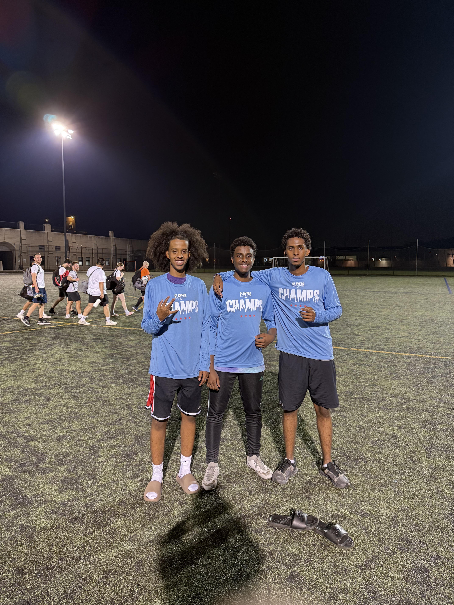

Welcome to My Homepage

About Me
My name is Huthef Abdirizak. I am a college student with an interest in cybersecurity, information technology, and technology in general.
I created this website to introduce myself, present my professional resume, and discuss my interest in cybersecurity and my future career.
My Education
I am continuing my college education while developing skills in cybersecurity, information technology, programming, networking, and web development.
My Interests
Outside of school, I enjoy playing soccer, swimming, exercising, and learning more about computers and technology.
Soccer Video
Some of My Favorite Activities
- Playing soccer
- Swimming
- Going to the gym
- Learning about cybersecurity
- Working with computers
Why I Like Technology
Technology continues to change the way people communicate, work, and solve problems. I enjoy learning how computer systems operate and how different technologies can be used to improve everyday life.
My Goals
One of my goals is to continue developing my technical skills and gain professional experience through internships and hands-on projects. I hope to build a successful career where I can use technology to solve problems and help protect computer systems and information.
I also want to continue improving my communication, teamwork, and problem-solving skills while gaining experience in professional technology environments.